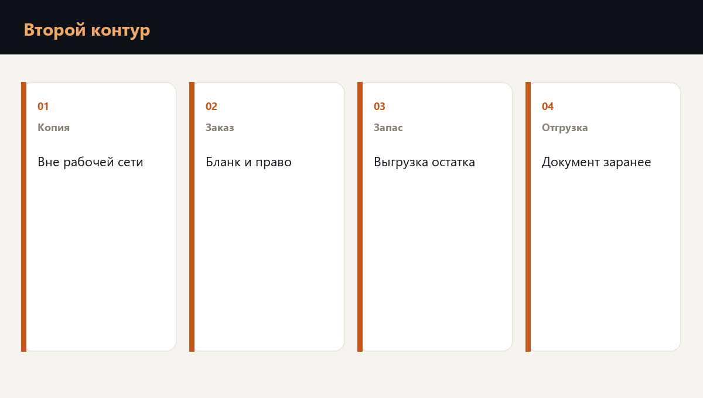

После шифровальщика компания часто обнаруживает, что второй экземпляр у нее был. И что атака закрыла его вместе с первым: та же сеть, тот же пароль, та же папка на том же сервере.
Второй способ работы устроен иначе. Это не еще одна копия рядом. Это возможность принять заказ, увидеть остаток и отпустить машину там, куда эта атака не доходит. В опубликованном логистическом разборе день без такой возможности стоил около 180 тысяч рублей. Второй контур имеет смысл, когда он спасает именно этот день, а не создает вторую папку.

Что именно готовят заранее
Готовят не всю компанию сразу, а один день отгрузки. Три вещи, без которых машина не уезжает: список того, что можно отпустить, правило, кому везти в первую очередь, и имя человека, который подписывает отгрузку без системы.
Список выгружают заранее и хранят так, чтобы шифровальщик его не прочитал. Это другая площадка, другой доступ, бумага. Контакты перевозчика и двух ключевых заказчиков лежат там же. Иначе в день атаки есть копия базы и нет телефона, по которому уезжает машина.
- Остаток. Выгрузка того, что склад может отгрузить без экрана.
- Заказ. Кому обещана поставка на ближайшие дни, на носителе, который атака не шифрует.
- Подпись. Кто имеет право отпустить машину, пока учет закрыт.
Где ручная отгрузка перестает быть выходом
Ходовой товар, который люди узнают в лицо, так отгрузить можно, и только в том объеме, который выгрузка подтверждает. Уникальный комплект, цену которого знает только CRM, руками лучше не обещать: ошибка в адресе или в комплекте стоит дороже паузы.
Упаковку под этот объем держат физически, не только строкой в системе. Нет коробки на площадке, нет отгрузки, даже если ведомость цела.
Как это смотрят на вашей компании
Проверка готовности к шифровальщику смотрит, куда именно не дотягивается атака, какой объем ходового товара люди способны отгрузить руками и кто подписывает эту отгрузку.
Вторая копия в той же сети не является вторым способом. Второй способ начинается там, где заказ, остаток и подпись переживут закрытие базы.
Частые вопросы
Копия хранит данные. Второй способ позволяет отгрузить заказ, пока данных в системе нет. Он лежит там, куда эта атака не доходит.
Тот, чей комплект, цена и адрес есть только в CRM. Ходовой товар по заранее выгруженной ведомости обещать можно, в пределах этой ведомости.
Туда, где шифровальщик ее не прочитает: другой доступ, другая площадка или бумага. Папка на том же сервере закрывается вместе с базой.
Готова ли команда к первому часу кризиса
Планы проверяются не чтением, а сценарием. Диагностика покажет пробелы, корпоративный формат отрабатывает их с вашей командой на ваших процессах.